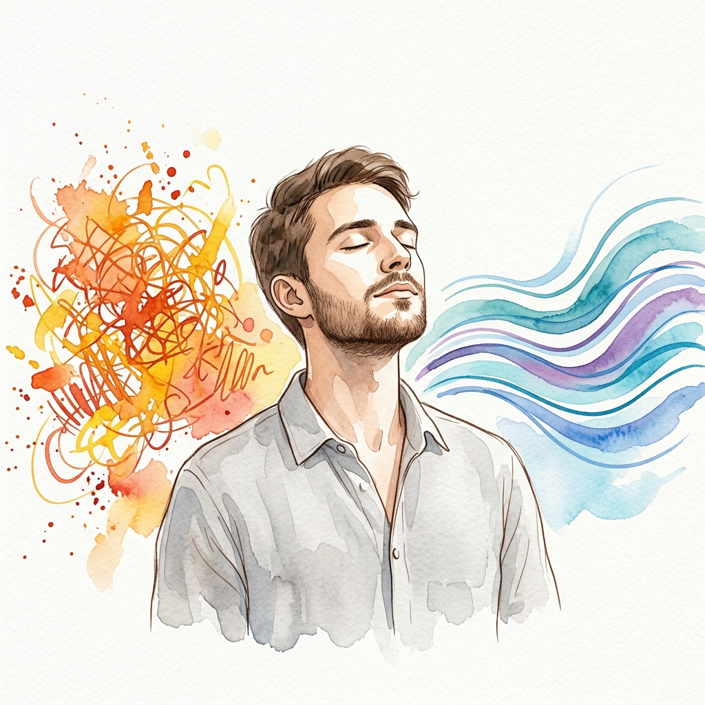
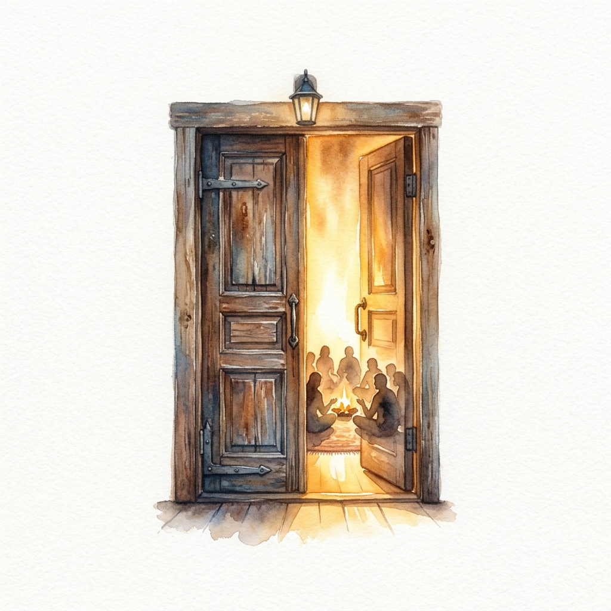
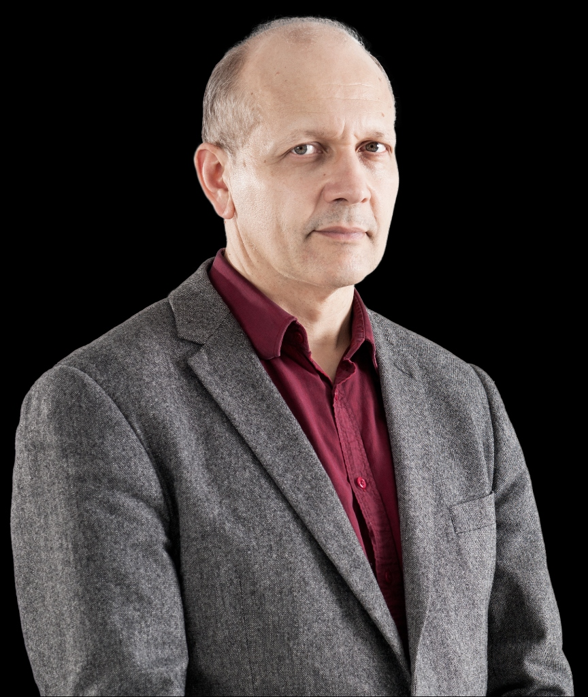

3 dienų Olego Lapino seminaras norintiems nusimesti įtampą ir išsekimą per kvėpavimą, judesį, garsą ir emocijų išraišką.

Neišreikštos emocijos virsta lėtine įtampa, išsekimu ir atitrūkimu nuo savęs.
Įtampa tampa raumenų šarvais, kurie riboja laisvą kvėpavimą, jausmų tėkmę ir gyvybingumą.
Per kvėpavimą ir judesį saugiai išlaisviname tai, kas užstrigę ir grįžtame į natūralų ritmą.
Daugiau energijos, lengvumo, emocinės laisvės ir gilesnio ryšio su savimi.
Natūralus procesas, kuris pamažu grąžina tave į ritmą.
Kvėpavimas pajudina užstrigusią energiją.
Kūnas pradeda judėti, įtampa tirpsta.
Saugiai išleidžiame sukauptas emocijas ir įtampą.
Įtampa ištirpsta, energija ima tekėti, grįžta vidinis ritmas.
Jei dar nežinai, ar Pulsacijos tau tinka – ateik į demo vakarą. Patirsi esminį metodo principą, pajusi atmosferą ir gausi atsakymus į savo klausimus.

Trijų dienų procesas, kuriame palaipsniui per kvėpavimą, judesį ir emocijų išsilaisvinimą grįžtame į gyvybingumą ir vidinį ritmą.
Kvėpavimas ir kūno budinimas.
Įtampos tirpdymas ir emocijų išraiška.
Ritmo atgavimas ir gyvybingumo įtvirtinimas.

Daugiau nei 40 metų praktikos turintis specialistas, Pulsacijas laiko vienu efektyviausių metodų, nes padeda pasiekti tikrą ir ilgalaikį pokytį.
40+ metų praktikos
Tūkstančiai patenkintų dalyvių
Pagarba kūnui ir žmogui
Saugumas ir profesionalumas